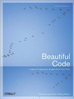
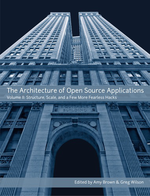
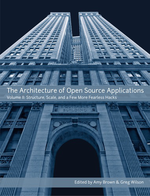
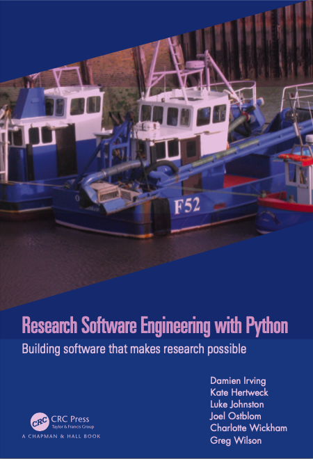

Governance
Introduction
Starting point
A 10X engineer is one who can bring together ten other engineers and emerge with a shared understanding and rough consensus of the problem being solved and work that needs to be done.
In this house we call them “project managers”.
Research software
- Software is created and run to answer a question
- Papers, theses, and other reports are the product
- The software is “just” a tool
- Shades into projects that produce software for other researchers to use
You
- Degree(s) in some research domain
- Little or no formal training in software development
- In a team of 1–12 people
- Timelines of weeks to months

Me
- Don’t remember much statistics…
- …but I’ve built a lot of complicated software…
- …and I’ve been lucky enough to hang out with some very smart people
  

Where we’ve been, where we’re going
| Then | Now | Next |
|---|---|---|
| Dropbox | Git repository | Branching workflow |
| “Just do it” |
Slack / mailing list |
Martha’s Rules |
| Interactive analysis | A big pile of scripts |
Build tools / CI |
|
Word / Google Docs |
Notebooks / LaTeX |
Site builder |
| “It doesn’t crash” | “Are there any NAs?” |
Assertions / unit tests |
| “Um, hi?” |
README + LICENSE |
CONTRIBUTING + CoC |
Acknowledgments
- Original workshop: Daniel Standage and Greg Wilson
- Producing Open Source Software: Karl Fogel
- Research Software Engineering with Python: Damien Irving, Kate Hertweck, Luke Johnston, Joel Ostblom, Charlotte Wickham, and Greg Wilson
- And everyone cited in the bibliography

How is your project currently run?
- Who uses your software?
- How do they find it?
- Who decides what will happen next?
- How is that communicated?
- Who can make what kinds of changes?
- What happens automatically?
- How are newcomers brought on board?
Governance
What problems are we trying to solve?
- Low productivity
- “Oh no: not another meeting…”
- Opaque decision making
- “Did we decide that?”
- “It’s not what you know, it’s who you know.”
The good news
- You don’t have to invent this yourself
- https://www.askamanager.org/
Governance models
- https://communityrule.info/ describes lots of options
- Benevolent dictator (often the project founder)
- Common in young projects
- Brittle (founder can move on)
- Usually leads to emergence of unofficial (i.e., unaccountable) leaders
- Elected representation
- Explicit rules for suffrage
- Consensus-based
- If most people agree on most things most of the time
“Hero” programmers
- Brooks advocated a chief programmer model in the 1970s [@Brooks1995]
- Disparaged since then
- But 80% of projects on GitHub are hero projects [@Majumder2019]
- 5% or less of people responsible for 95% or more of interactions
- “Heroes” commit far fewer bugs than other contributors
- Despite terminology, not a bad model for research projects
- [@Petre2014] found that people without domain knowledge couldn’t review scientific code effectively
Martha’s Rules
- Anyone can put forward a proposal by filing it at least 24 hours before a scheduled meeting
- One-line summary
- Background information
- Concrete proposal
- Pros and cons
- Alternatives
- At most two pages
- Preferably shorter
Establishing a quorum
- A quorum is established if half or more of voting members are present
- Which means there must be:
- A rule about how to become a member
- A rule about when and how someone stops being a member
- The meeting may not discuss or vote on a proposal unless its sponsor (or their delegate) is present.
Presenting a proposal
- The sponsor has 5 minutes to present the proposal
- Members cast a sense vote: support, neutral, or oppose
- If everyone supports or is neutral, go immediately to a binary vote with no further discussion
- If a majority is opposed or neutral, send proposal back to sponsor for further work
- If a minority of members oppose, set a timer for 10 minutes of moderated discussion
- Then call a final binary vote in which everyone must support or oppose (no neutral votes allowed)
- If a majority support, the proposal is accepted
- Otherwise, it is returned to the sponsor for further work
Roles and responsibilities
| Person | Roles | Role | Task | |
|---|---|---|---|---|
| ghopper | admin | admin | merge PRs | |
| kjohnson | admin, commit | × | admin | assign issues |
| aturing | commit | commit | publish posts | |
| bwk | commit | commit | file issues |
- Gives you a list of what actually needs to be done
- It’s always longer than you first expect
- Tells everyone who to go to for what
- Particularly when their first choice is on holiday
- Helps with succession planning
- “We don’t have anyone who does that any more…”
Code of Conduct
- Diverse communities need explicit norms
- “I didn’t realize someone would find that offensive”
- Which is sometimes used dishonestly…
- Adopt a Code of Conduct (e.g., Python’s)
- Its mere existence is a strong signal about the kind of community you are
- Don’t write one yourself
- You won’t think of all the edge cases
- Using someone else’s makes misunderstandings less likely
- Use the Contributor Covenant
Code of Conduct
- A Code of Conduct is only useful if it is enforced
- And if there is a clear reporting mechanism that community members trust
- Be explicit about enforcement mechanisms and consequences
- Designate an independent third party to handle complaints
- Trade off with another project lead
- Do the background reading [@Aurora2019]
Meetings
- On par with interruptions for “things people wish they could have less of”
- Unlike interruptions, can be done well
- As with governance, having rules is the first and biggest step toward efficiency
1. Does there actually need to be a meeting?
- To inform? Only if you are expecting questions
- To consult? Only if people get a vote
- Otherwise it’s just informing with pretense
- To discuss and make decisions? Yes
- But only in small groups
- Or with well-defined procedural rules
- To brainstorm or collaborate?
- That’s a very different kind of meeting
2. Create an agenda
- If you don’t care enough to make a list, you don’t need a meeting
- Include timings
- Prioritize
- Plan to end early
- “The most fundamental unit of time is the bladder”
3. Have clear rules for making decisions
- “The Tyranny of Structurelessness” [@Freeman1972]
- If you need Robert’s Rules, you need training
4. Put someone in charge
- The moderator should not do most of the talking
- Any more than the conductor plays most of the notes
- Call on specific people in order
- Allow them one point at a time
- Keep a backlog
5. Require politeness
- All the other rules are special cases of this…
- No technology during in-person meeting
- Except for assistive technology or family need
- “Please put your devices in politeness mode”
- No interruptions
- Except by moderator
- No rambling
- You do have a Code of Conduct, right?
6. Record minutes
- So people who weren’t there know what happened
- So people who were there agree what happened
- So people can be held accountable at later meetings
7. Manage “that guy”
{width="100%"}<ul>
<li>The moderator's other job…</li>
<li>Three stickies</li>
<li>Interruption bingo</li>
<li><a href="https://coast.noaa.gov/ddb/">https://coast.noaa.gov/ddb/</a></li>
</ul>8. Be an active participant
- Decline invitations
- If you agree to abide by what the meeting decides
- Read the agenda and material before the meeting
- Take your own notes
- Use participants’ names
- Pause before speaking
- Put down your hand
9. Life online
- No mixed-mode meetings
- All in person or all online
- Do not record the meeting without willing consent
- Review meeting protocol at the start if necessary
- Take minutes in a shared document
- Raise hands digitally
/handin the chat is good/hand another budget itemis better
10. Seek truth, not victory
- No social dominance displays
- “Well actually…”
- Don’t raise points you don’t actually believe in
- The devil doesn’t need more advocates
- Don’t make excuses for your questions or opinions
- “This is probably stupid, but…”
Recommended reading
- [@Brookfield2016] has a lot of good ideas for managing discussion
exercise
Decision making
- What decisions has your project made recently?
- Who made them?
- Where are they recorded?
exercise
What roles and responsibilities do you have?
- List a dozen things people do to keep your project going in Column A.
- List people who contribute to the project in Column B.
- Draw lines to connect them. What roles can you identify?
exercise
Who decides?
- Who gets a vote in your group?
- How are new people added to that pool?
- When and how do people lose their votes?
- Where and how do other people find out what has been decided and how it affects them?
- Where and how can non-voters raise issues?